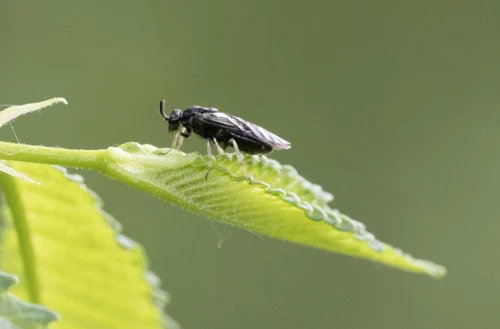

榆树叶缘出现曲折的之字形食痕
榆树曲线刻叶蜂低龄幼虫会在侧脉间咬出特殊曲线。轻度受损叶比严重残缺的叶更容易鉴别，拍照时既要记录大范围缺损，也要留下一道初期窄食痕。

先看哪里
先确认树种属于榆属。在受害较轻的叶片上，从叶缘向内沿叶脉间寻找窄而曲折的之字形食痕。拍照时在叶后垫一张反差大的纸。否则缺口会与后方绿叶融在一起，看起来像叶片表面变色。
确认线索
翻叶检查食痕前端是否有小型绿色叶蜂幼虫。高龄幼虫食量较大，反而可能把最初的之字形痕迹吃掉。
相似症状
潜叶虫留下的隧道上方还有叶表皮。曲线刻叶蜂会把叶肉连同表皮吃掉，缺口与叶缘相通。
处理方法
将新食痕与幼虫一起拍照。如果当地以前未见过，可向区域植保机构提交照片，请其协助鉴定。
如何复查
复查不同枝条的新叶，记录危害是否一直零星，还是多次造成树冠大范围失叶。
挑一片轻伤榆叶拍下叶缘。另一段完整叶缘后来出现曲折切口，是新增取食位置。重伤叶上的缺损继续扩大时，原来的之字形反而会消失，不适合作鉴别样本。